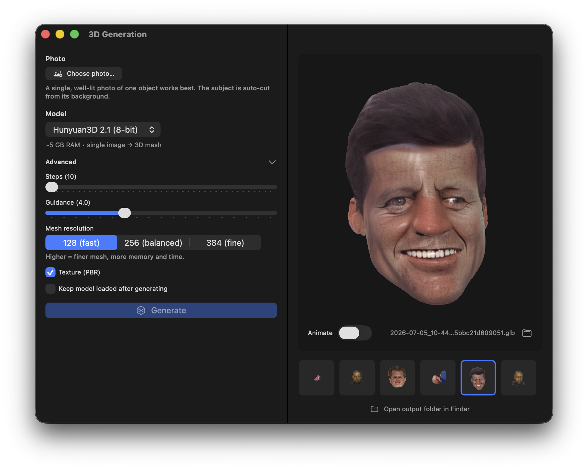

Drop in a picture and Hunyuan3D-2.1 — ported natively to Apple Silicon — builds the mesh on your Mac: subject cut out automatically, geometry generated, and an optional paint stage that textures the model from the same photo. Standard GLB out; opens anywhere glTF does.
Open the 3D pane, drop in a picture, generate. The subject is cut out from the background automatically, a 3.3-billion-parameter diffusion shape model builds the geometry, and the finished model spins in a built-in 3D viewer with a gentle turntable idle. Every past generation stays one click away in a thumbnail history shelf.
Turn on Texture (PBR) and the same photo paints the mesh: a multiview diffusion stage generates albedo and metallic-roughness maps across six views and bakes them into a 2K texture atlas — a standard glTF PBR material that renders correctly in any engine.

Everything runs inside the same no-Python binary: the diffusion shape transformer, SDF decoding, marching-cubes surface extraction, UV unwrapping, the 2-billion-parameter multiview paint UNet, texture baking and inpainting, and a glTF writer. The texture stage is validated against the PyTorch reference at cosine 1.000 on the full denoiser step.
Surface extraction samples coarse-to-fine — 6× faster than a dense sweep at the highest resolution, with byte-identical geometry — which is why the default mesh detail is the reference's "fine" setting. One click downloads the whole stack (shape + texture in a single package), and it runs on a 16 GB Mac.
POST /v1/3d/generations with a base64 photo — add "texture": true for the PBR paint stage — returns a base64 GLB. SSE progress in stream mode. Full API docs.
No photo? Generate one — prompt an object into existence with Krea-2 or FLUX.2, then lift it into 3D. The whole chain runs on one machine.
Mesh detail is adjustable (octree resolution 64–512) — draft fast at low res, then re-run fine for the keeper. A seed makes any result repeatable.
The built-in viewer spins the model with a turntable idle; the history shelf keeps clickable thumbnails of every generation, and the GLB is one click from Finder.
A clear single subject — product shots, characters, toys, objects. A three-quarter angle gives the model the most shape information. The background is removed automatically, so you don't need a clean cutout (though transparency helps).
It's a standard GLB (binary glTF) with PBR materials — it opens in Blender, Unity, Unreal, three.js, and any glTF viewer, no conversion needed.
An Apple Silicon Mac with 16 GB of memory runs the full pipeline, texturing included. The model stack downloads with one click and loads on demand.
Component by component, it's validated against the reference implementation with numerical oracles — the texture stage's full denoiser step matches at cosine 1.000, and the fast surface extraction produces byte-identical geometry to the dense reference path.
Download MLX Core, grab the 3D stack with one click, and turn the nearest object into an asset.